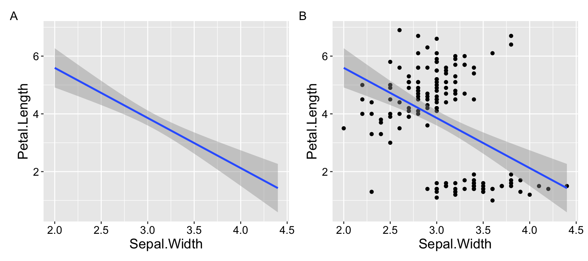
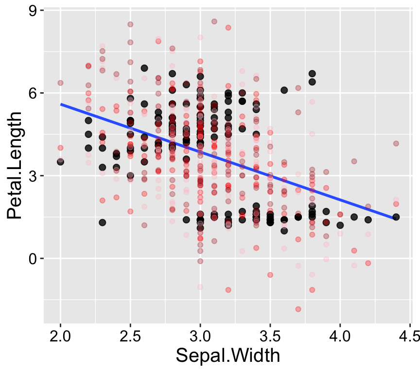
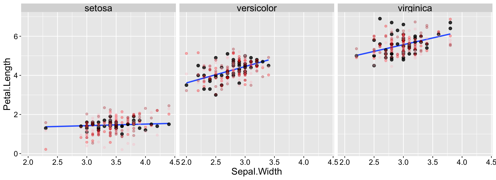
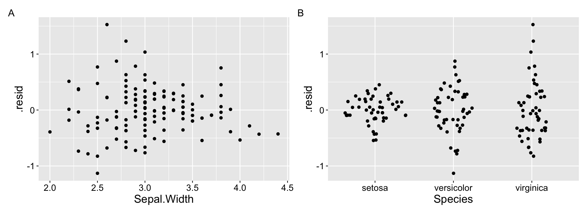
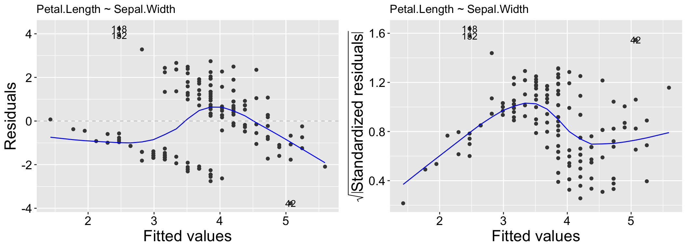
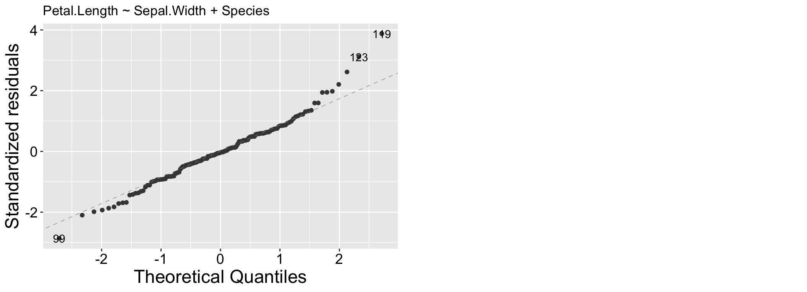
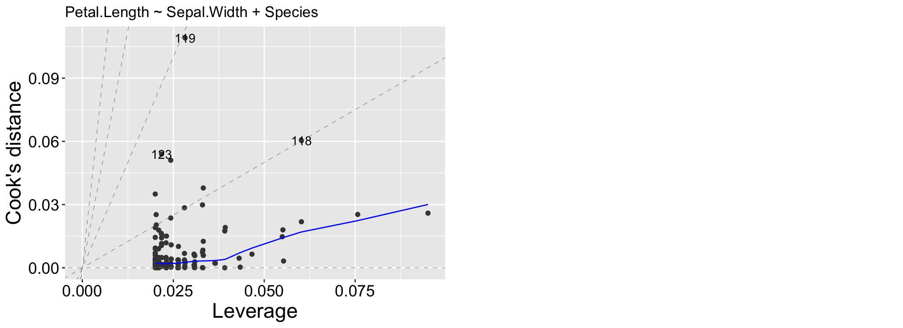
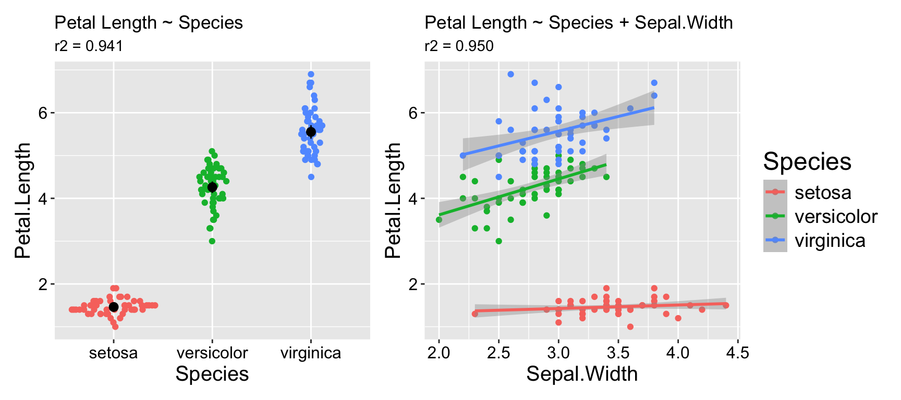
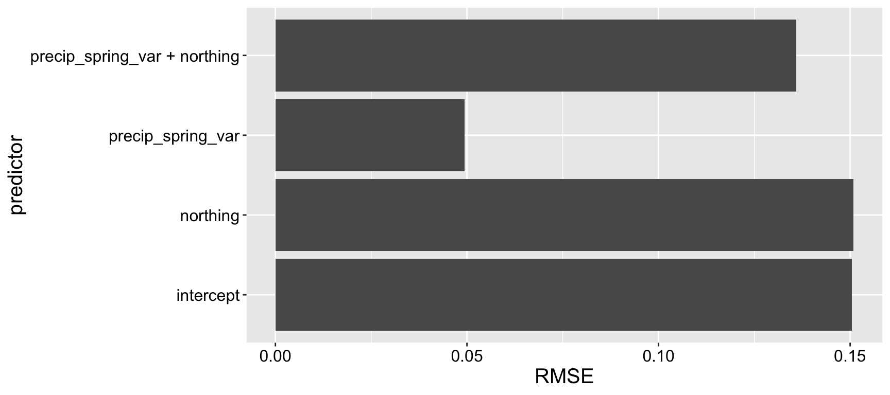

Motivating Scenario: You have built (or are in the process of building) a model. You can estimate parameters (with uncertainty) and test null hypotheses etc… But how can you tell if your model is any good?
Distinguish between “rejecting the null” from “having a good alternative”
Use plots and simulations to judge whether a model captures key patterns in data.
Interpret residual, QQ, and leverage plots to spot nonlinearity, heteroscedasticity, or outliers.
Compare models using adjusted \(R^2\), AIC, and log-likelihood, and explain how they penalize complexity.
Use cross-validation (LOOCV and k-fold) to assess predictive performance and avoid overfitting.
Reflect on when a more complex model is worth it vs when a simpler one is perferable.
Goals of model building
“All models are wrong, but some are useful.” George Box.
“A map is not the territory it represents, but, if correct, it has a similar structure to the territory, which accounts for its usefulness.” Alfred Korzybski.
“Truth is much too complicated to allow anything but approximations.” John von Neumann.
Biology is messy and complex. Rarely can we fully grasp the workings of any biological phenomenon. Our brains need help to navigate this complexity. A simplified mathematical or conceptual representation of a biological system, known as a “model”, can simplify complex systems to allow us to understand them. Good models highlight key relationships, test hypotheses, or make predictions from a few key features of a system. By focusing on the most relevant factors and ignoring extraneous details, models allow us to simplify complex biological systems into things we can understand.
For example, statistical models (e.g. regression) can show how a trait (e.g. body size) is influenced by environmental factors (e.g. calories consumed per day), while a biological model like a Holliday junction helps us visualize the molecular mechanics of DNA recombination. Neither of these models completely describes reality, but I cannot get my head inside a developing organism or the process of meiosis, so these models are a good start.
But what are the “most relevant factors” to focus on, and what “extraneous details” can we ignore? To a large extent, this depends on the type of model we are building and what we want the model to achieve. Models are tools, and just like trying to bang in a nail with a saw would be ineffective and dangerous, the wrong model can mislead and confuse.
If our goal is to build a model for prediction, we prioritize how well it performs on new observations, often favoring predictive accuracy over interpretability.
On the other hand, if our aim is to understand a biological system, we might prefer a simpler model with fewer variables that explains much of the system’s behavior, rather than a more complex model that explains even more but at the cost of clarity.
If our goal is to understand the biological process that generates our data, we might explicitly incorporate plausible causal mechanisms into the model. This often involves paying close attention to the distributions underlying the data rather than relying on the fact that many models are robust to violations of the normality assumption.
While there are some guidelines for what makes a good or bad model, the things we care about most in our statistical models can depend on which of these missions we are undertaking.
Model fit vs model adequacy
There are three rough ways we can think about answering the question “Is my model any good?” We can ask
“Does my model fit the data well?”
“Is my model an adequate description of the process?”
“Are my conclusions from null hypothesis significance testing and/or my uncertainty estimates justified?”
I won’t focus on “Are my conclusions from null hypothesis significance testing and/or my uncertainty estimates justified?” here. You can evaluate this question by permutation (for nhst) and bootstrapping (for estimating uncertainty).
Visualize your data and your model!
The first step in evaluating the quality of your model is to visually inspect it along with the raw data. Your eyes are often better at detecting unusual patterns than most calculations!
For example, suppose you want to determine whether sepal width reliably predicts petal length in the iris dataset. You might observe a significantly negative association: as sepal width increases, petal length decreases (\(r^2 = 0.18\)). Not what I would have expected, but ok…
However, looking at the data reveals that this model is pretty bad. As you can see in Figure 1.1. The overall negative relationship is driven by differences between three clusters (which we know to correspond to species). Within each cluster, the relationship appears positive.

Figure 1.1: Showing the data helps us evaluate model fit.
Simulation to help the eye
Our eyes and brains are often quite good at spotting unusual patterns in plots. However, they can sometimes over-interpret what they see. Simple simulations are a great way to train ourselves to recognize normal variability, such as that arising from sampling error. The simplest simulation models observations as their expected values from the model plus random noise, based on the variability in the residuals.
As shown in Figure 1.2, the patterns in the real data differ noticeably from the patterns in three simulated datasets generated from the model.
lm(Petal.Length ~ Sepal.Width, data = iris) %>%augment() %>%mutate(sim_petal_length_a =rnorm(n(), mean = .fitted, sd =sd(.resid)),sim_petal_length_b =rnorm(n(), mean = .fitted, sd =sd(.resid)),sim_petal_length_c =rnorm(n(), mean = .fitted, sd =sd(.resid)) ) %>%ggplot(aes(x = Sepal.Width, y = Petal.Length)) +geom_smooth(method ='lm', se =FALSE) +geom_point(size =2, alpha =0.8) +geom_point(aes(y = sim_petal_length_a), color ="red", alpha =0.3) +geom_point(aes(y = sim_petal_length_b), color ="pink", alpha =0.3) +geom_point(aes(y = sim_petal_length_c), color ="firebrick", alpha =0.3) +theme(axis.title =element_text(size =15),axis.text =element_text(size =12))

Figure 1.2: Simulation helps us evaluate model fit. Real data are shown with large black points; data from three simulations are shown in reddish colors.
By contrast, the data and simulations look more similar when we include species in our model (Figure 1.3).

Figure 1.3: Simulation helps us evaluate model fit. Real data are shown with large black points; data from three simulations are shown in reddish colors.
Multivariate visualizations
The visualizations above can be pretty helpful, but we are most often worried about the fit and performance of more complex models with numerous predictors. What to do then? One approach is to use residual plots to check for patterns in the unexplained variation. For example, you can create residual plots (i.e. residuals are on the y and a focal predictor is on the x) for each predictor in your model tocheck for non-linear trends and/or.
For example Figure 1.4 clearly shows the difference in variance across species in our residuals from model predictions of petal length as a function of sepal width and species.
a <-lm(Petal.Length ~ Species + Sepal.Width, data = iris) %>%augment()%>%ggplot(aes(x = Sepal.Width, y = .resid))+geom_point()+theme(axis.title =element_text(size =15), axis.text =element_text(size =12))b <-lm(Petal.Length ~ Species + Sepal.Width, data = iris) %>%augment()%>%ggplot(aes(x = Species, y = .resid))+geom_sina() +theme(axis.title =element_text(size =15), axis.text =element_text(size =12))a+b +plot_annotation(tag_levels ="A")

Figure 1.4: Residual plots can help us evaluate assumptions.
Model diagnostics
We have previously been concerned about the assumptions of a linear model because we wanted to ensure that metrics like p-values, confidence intervals, and standard errors were well-calibrated. While these are valid concerns, here we propose a different perspective: treating violations of model assumptions as prima facie evidence that the model does not fully capture the data’s structure. This shift in viewpoint changes how we approach assumption violations — instead of focusing on how to force the data to meet assumptions, we can see these violations as signals that the process generating the data is more complex and interesting than the model suggests.
Let’s consider how violations of linear model assumptions can provide insights into underlying biology:
Differences in variance: The treatment may not only influence the group means but also alter the variability within groups. This is exciting, as it suggests additional biological processes at play!
Non-independence: Patterns or relationships among the subjects in our study could indicate interesting biological interactions or grouping effects. Exploring these could help us better understand the thing we hoped to study.
Residuals are not normally distributed: The data generation process may be richer and more complex than our model captures, offering an opportunity to uncover deeper biological mechanisms.
Interpreting diagnostic plots
Above, we visualized the raw data (potentially aided by simulations), and residual plots as ways to evaluate our model. We can also make use of the standard “diagnostic plots” we have seen previously:
Residual vs Fitted and Scale-Location plots
Linear models assume that residuals and their variance are independent of predictors. These two plots help us evaluate these assumptions.
The Residuals vs Fitted plot is useful for identifying patterns in residuals that may indicate issues such as non-linearity, missing predictors, or systematic biases in the model. In this plot, the x-axis represents the model’s predicted values, while the y-axis shows the residuals. Ideally, the residuals should appear as a random scatter around zero, with no discernible patterns, indicating no systematic deviations. Clear patterns in the residuals, as seen in the left panel of Figure 2.1, suggest potential problems with the model.
While heteroscedasticity (non-constant variance) can be observed in the Residuals vs Fitted plot—for example, larger residual variance for higher fitted values, as shown in the left panel of Figure 2.2 – the Scale-Location plot is specifically designed to highlight this issue. This plot focuses on the magnitude of the residuals rather than their direction by plotting the square root of the standardized residuals on the y-axis. Similar to the Residuals vs Fitted plot, a random scatter of points in the Scale-Location plot suggests the model fits well. However, a clear pattern, such as the linear trend in the right panel of Figure 2.2, would indicate heteroscedasticity.
autoplot(lm(Petal.Length ~ Sepal.Width, data = iris), which =c(1,3)) +labs(title ="Petal.Length ~ Sepal.Width")

Figure 2.1: Residual vs Fitted and Scale-Location for the model, Petal.Length ~ Sepal.Width.
autoplot(lm(Petal.Length ~ Sepal.Width+Species, data = iris), which =c(1,3)) +labs(title ="Petal.Length ~ Sepal.Width + Species")
Figure 2.2: Residual vs Fitted and Scale-Location for the model, Petal.Length ~ Sepal.Width + Species.
QQ plots
We have already seen QQ (Quantile-Quantile) plots. QQ plots compare the quantiles of the residuals, to the quantiles of a theoretical distribution (the normal distribution for linear models). Residuals follow their expected distribution if they fall largely on the 1:1 line. Deviations indicate departures from normality – so curvature at the tails suggests heavy (big values are too big – use a square root or log transformation) or light (too few big observations – use a square or exponential transformation) tails, while an S-shape indicates skewness. We see for the model lm(Petal.Length ~ Sepal.Width + Species, data = iris) that our large values are a bit too large.

Figure 2.3: A QQ plot from our model: Petal.Length ~ Sepal.Width + Species.
Residuals vs Leverage plots
We may be concerned that our model works too hard to explain a few extreme observations. The Residuals vs Leverage plot can help us diagnose this potential issue. Values in the top or bottom right corners would be most concerning patterns, because these would indicate points that heavily influenced our model.

Figure 2.4: A Residuals vs Leverage plot from our model: Petal.Length ~ Sepal.Width + Species.
Evaluating Model Fit
We have already discussed some basic summaries of how well our model fits the data:
\(R^2\): describes the proportion of variation in the response variable, \(y\), that is “explained” by the model. A higher \(R^2\) suggests that the model accounts for a larger share of the variation in the data. But \(R^2\) on its own can’t tell us if our model is appropriate or correctly specified. What is considered a “good” \(r^2\) varies across fields, experimental designs etc.
Log-Likelihood: The log-likelihood quantifies the probability of observing our data given that the model is true. Models that produce higher log-likelihood values (less negative) are generally better at describing the observed data. However, log-likelihoods are heavily influenced by the scale of the data and the number of observations, and larger datasets naturally produce lower log-likelihoods because the likelihood is the product of probabilities across all observations. Therefore, there is no intuitive scale for log-likelihoods, and they cannot be directly compared across datasets of different sizes or scales.
Importantly, there are no universal “rules of thumb” for what makes a good or bad model based on these metrics. Additionally, both \(r^2\) and the log-likelihood will appear to “improve” as the number of parameters increase, but that does not mean that adding parameters always improves our model.
Model comparison
Penalizing Additional Parameters

Figure 3.1: Two models predicting Petal length in the iris data set.
Because adding parameters always appears to improve model fit, people have developed tools to evaluate whether an extra parameter is justified. So we might wonder if adding Sepal Width to our model of Petal Length as a function of Species is justified. Various approaches “penalize” a statistical model for including additional parameters. Here are a couple of widely used methods:
Adjusted \(R^2\) accounts for the number of predictors in the model and adjusts for overfitting. It is given by:
Unlike \(R^2\) , the adjusted \(R^2\) can decrease as we add parameters, indicating that the added complexity does not sufficiently improve model fit. So, don’t get overly excited about an increase in \(R^2\) from adding a variable—be sure to check the change in adjusted \(R^2\) as well.
AIC penalizes the log-likelihood. Specifically, AIC is calculated as: \[2\times(k+1) - ln(\widehat{L})\] where \(k\) is the number of parameters in the model, and \(ln(\widehat{L})\) is the log-likelihood of the model. A lower AIC indicates that the added parameter improves model fit. In general, a decrease in AIC of at least 2 (approximately equivalent to a two-standard-error improvement) is considered evidence to prefer the model with more parameters.
R is happy to calculate these values for us. The adjusted \(R^2\) value is provided from the summary()function, and the AIC() function will return the AIC of your model. Even better, the glance() function in the broom package gives us these values and more.
Say we were interested in comparing our model predicting petal length as a function of iris species to a model which included both species and Sepal. We can write down the two models in Figure 3.1:
species_and_SW_model <-lm(Petal.Length ~ Species + Sepal.Width ,data = iris)glance(species_and_SW_model) %>%kbl()
r.squared
adj.r.squared
sigma
statistic
p.value
df
logLik
AIC
BIC
deviance
df.residual
nobs
0.949745
0.9487124
0.3997829
919.7288
0
3
-73.28859
156.5772
171.6304
23.33465
146
150
We can see here that there is statistical evidence to prefer the model with Sepal Width and Species over the model with just species – the adjusted \(R^2\) has increased and the AIC went down by more than twenty units!
Note this does not mean we should necessarily choose the model with Sepal Length in addition to species. We should think about our goals and priorities when making a model. In this case adding this additional parameter explains and additional one percent of the variation in Petal Length. Another way to say this is that an overwhelming proportion of the variance in petal length is attributable to variation between species. So if you are looking for a short petal getting one from Iris setosa would be a pretty safe bet. But if you want your predictions to be even more accurate, knowing sepal width would help.
Just because metrics like AIC or adjusted \(R^2\) favor one model does not mean it is universally “better.” Choosing a model depends on many factors: does it reflect the biological process? Does it fit assumptions? Is it simpler or easier to interpret? Does it predict future data more accurately? Better should refer to “better for what.” Always consider the specific goals of your analysis.
Model evaluation: Predictive Performance
“With four parameters I can fit an elephant, and with five I can make him wiggle his trunk”
von Neumann to Fermi according to Freeman Dyson.
Rather than relying solely on simple measures of significant model improvement (e.g., AIC, BIC, adjusted \(R^2\) , etc.), we are often more practically interested in how well our model predicts new data. While this is challenging because we typically have access only to our existing data, we can approximate this task by building models using a portion of the data and then evaluating how well the model performs on the unseen portion. This approach, known as cross-validation, helps us assess predictive performance and identify when our models have overfit the data.
Leave one out cross validation
I am interested in the features that mediate how much gene flow can occur during the process of speciation. With my collaborators we estimated the admixture proportion in Clarkia xantiana xantiana (i.e. the proportion of a populations’ genome which is derived from recent hybridization with its sister subspecies, Clarkia xantiana parviflora). The data were hard to get – and we only have so many populations to choose from. We ultimately estimated the admixture proportion across six populations for which we had complementary data (geography an temperature).
We honed in on two promising predictors – the variation in spring precipitation, and how far north a population was. Individually each term was significant, but together neither was likely because of multicollinearity (Figure 4.1).
Figure 4.1: Relationship between northings, variance in spring precipitation, and admixture proportion.
To evaluate the performance of these models, we conducted leave-one-out cross-validation (LOOCV). This involves building a model using all data points except one, then predicting the “held-out” data point using this model. The difference between the actual value of the held-out data point and its predicted value (from the model that excluded it) is recorded. This process is repeated for every data point in the dataset. To summarize the overall model performance, we compute a measure of prediction error—commonly the square root of the mean of the squared differences between the predicted and actual values of the held-out data points (root mean squared error, or RMSE). We then compared this measure across all models, including a model with only the intercept, to assess which model performed best.
Here’s how you can do this with R’s caret package:
Linear Regression
6 samples
1 predictor
No pre-processing
Resampling: Leave-One-Out Cross-Validation
Summary of sample sizes: 5, 5, 5, 5, 5, 5, ...
Resampling results:
RMSE Rsquared MAE
0.1504829 1 0.1326683
Tuning parameter 'intercept' was held constant at a value of TRUE
train( admixture_prop ~ precip_spring_var, data = admixture,method ="lm",trControl =trainControl(method ="LOOCV"))
Linear Regression
6 samples
1 predictor
No pre-processing
Resampling: Leave-One-Out Cross-Validation
Summary of sample sizes: 5, 5, 5, 5, 5, 5, ...
Resampling results:
RMSE Rsquared MAE
0.04943208 0.8453071 0.0432178
Tuning parameter 'intercept' was held constant at a value of TRUE
train( admixture_prop ~ northing, data = admixture,method ="lm",trControl =trainControl(method ="LOOCV"))
Linear Regression
6 samples
1 predictor
No pre-processing
Resampling: Leave-One-Out Cross-Validation
Summary of sample sizes: 5, 5, 5, 5, 5, 5, ...
Resampling results:
RMSE Rsquared MAE
0.1508915 0.3394032 0.1017351
Tuning parameter 'intercept' was held constant at a value of TRUE
Linear Regression
6 samples
2 predictors
No pre-processing
Resampling: Leave-One-Out Cross-Validation
Summary of sample sizes: 5, 5, 5, 5, 5, 5, ...
Resampling results:
RMSE Rsquared MAE
0.1359965 0.2724525 0.1031327
Tuning parameter 'intercept' was held constant at a value of TRUE

Figure 4.2: Leave one out model validation.
We observe that a model using only precip_spring_var predicts the missing data effectively, suggesting it captures meaningful variation in the response variable. In contrast, a model using only northing performs no better than an intercept-only model, indicating that northing provides little to no predictive value on its own. Surprisingly, when both northing and precip_spring_var are included in the model, the prediction of held-out data worsens compared to the model using only precip_spring_var (Figure 4.2). This highlightsan important conclusion – a simpler model can make better predictions than a more complex one.
K fold cross validation
While leave-one-out cross-validation (LOOCV) is useful, it is best for small datasets like the admixture analysis above. This is because LOOCV becomes computationally expensive for larger datasets, as it requires training the model \(n\) times (where \(n\) is the number of observations). Additionally, LOOCV can produce high-variance estimates of model performance because each training set is very similar, with only one observation excluded in each iteration. As a result, the models are highly correlated so you don’t get much bang out of that extra computation.
\(k\)-fold cross-validation splits the dataset into \(k\) groups (or “folds”). The model is trained on \((k-1)\) folds and tested on the remaining fold. This process is repeated \(k\) times, each time leaving out a different fold as the test set. By averaging the results across all folds, \(k\)-fold CV provides a more robust estimate of model performance. Compared to LOOCV, \(k\)-fold CV reduces computational burden and produces lower-variance performance estimates since each test set contains more observations, and the training sets differ more substantially across folds.
The code for \(k\)-fold cross-validation using the caret package is nearly identical to that for LOOCV, with a slight adjustment to the trainControl argument. For \(k\)-fold CV, you specify trainControl(method = "cv", number = K), where K is the number of folds. By convention, \(K = 10\) is most common.
As in leave one out cross validation you can compare performance of more complex to simpler models with k fold cross validation, to see whether a more complex model makes better or worse predictions than a simpler model.
Note that in all cross-validation approaches, we are still limited to the data at hand. This raises a valid concern: patterns of non-independence or specific characteristics of your study (e.g., conditions that apply to soil in Minnesota may not apply to soil in South Dakota) could limit how well the model generalizes to different contexts, such as another time, location, or population.